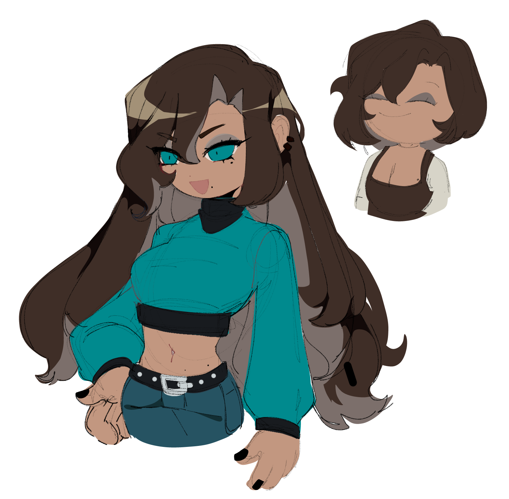
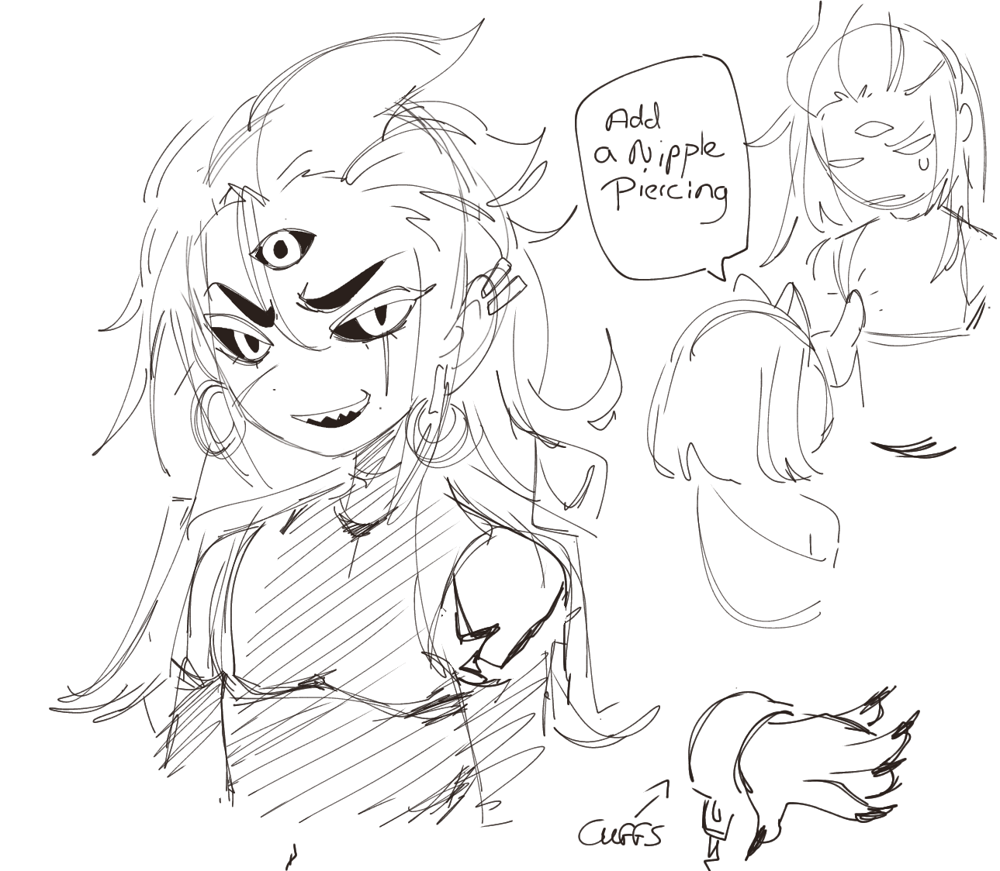
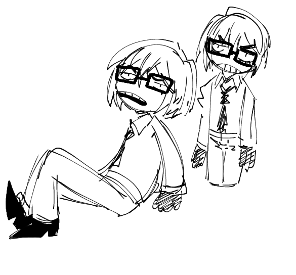
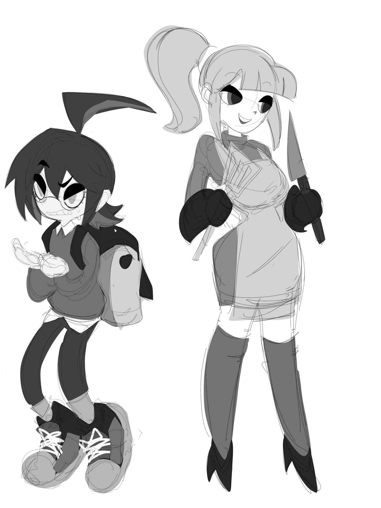
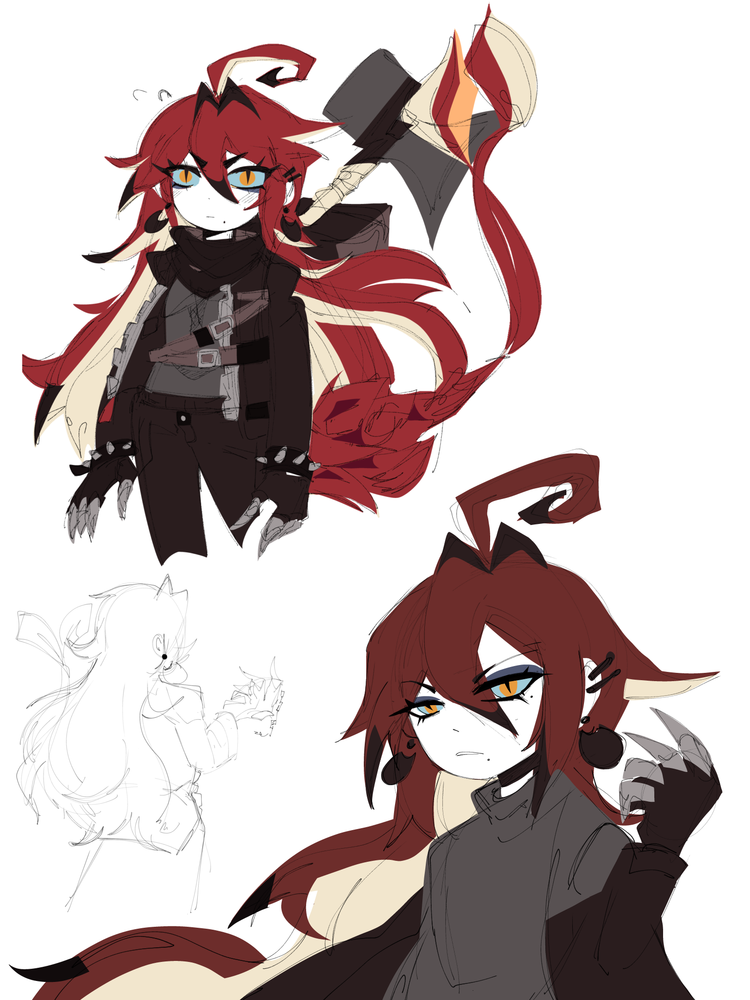
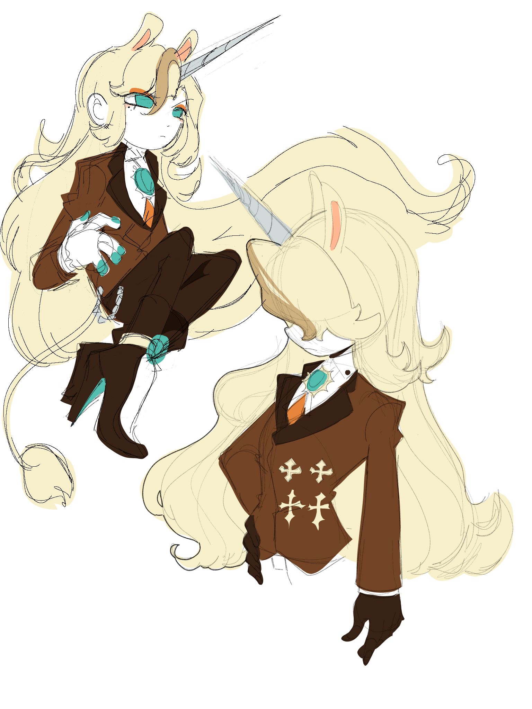
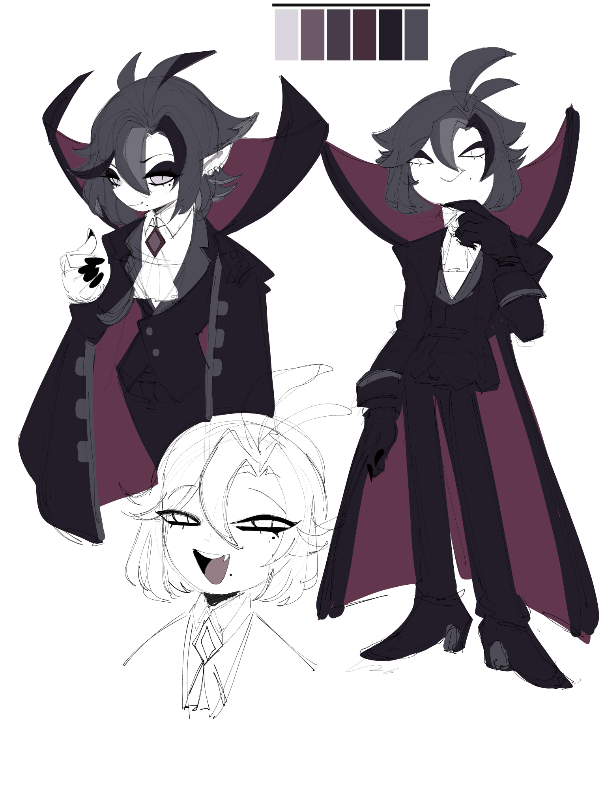
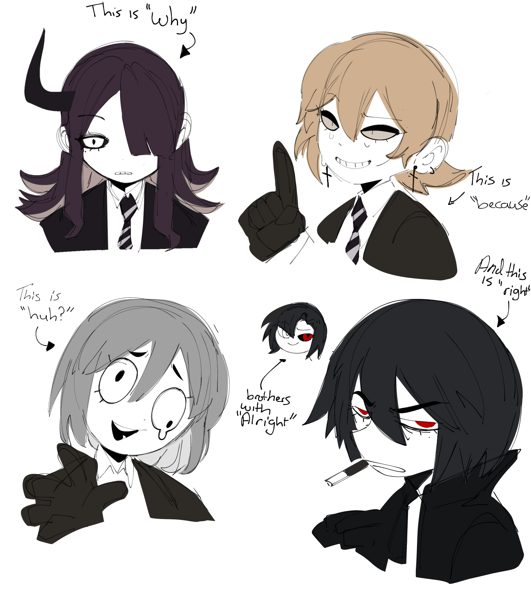
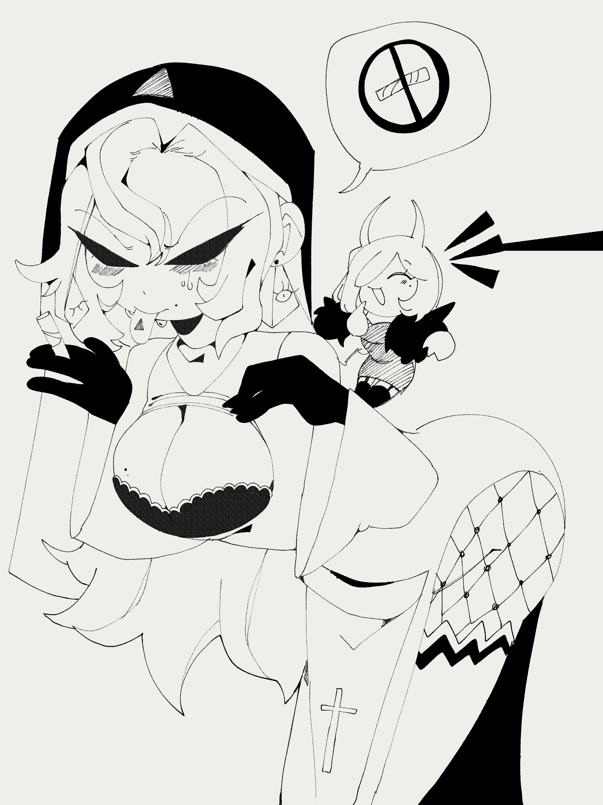

Dumpsterfire
 Shits for fun, shitposting, doodles and memes Shits for fun, shitposting, doodles and memes
1# doodles, character concepts and scribbles









0# Awaiting..
welcome to the mess that is my dumspter fire, where i vent, write personal notes, little character facts, maybe small anouncements and so on
couple of things you should maybe know on how i operate this website, for the funsies, for the sillyness, yes that's the kind of person I am , silly mallie im right?
on to the operation
where all the characters? Gone, cause i changed my artstyle into something simpler, i can now produce way faster and im glad that im able to do so, but i like to somehat have consistency
I make 100 characters a year, yes me alone trust me i can do it. now that i have no bounds, i will speed trough it at the end of 2025
There are 5 bilogical famlies, as you can see in the manual, That does not mean species, families in skullmare are reffered to as a group of species that posesses similiar traits:
for example, a vampire and a grim reaper are in the same family, (elderitch) but their both different species. each indivial species and their activities, traits etc all of this will be talked about in the manual
|